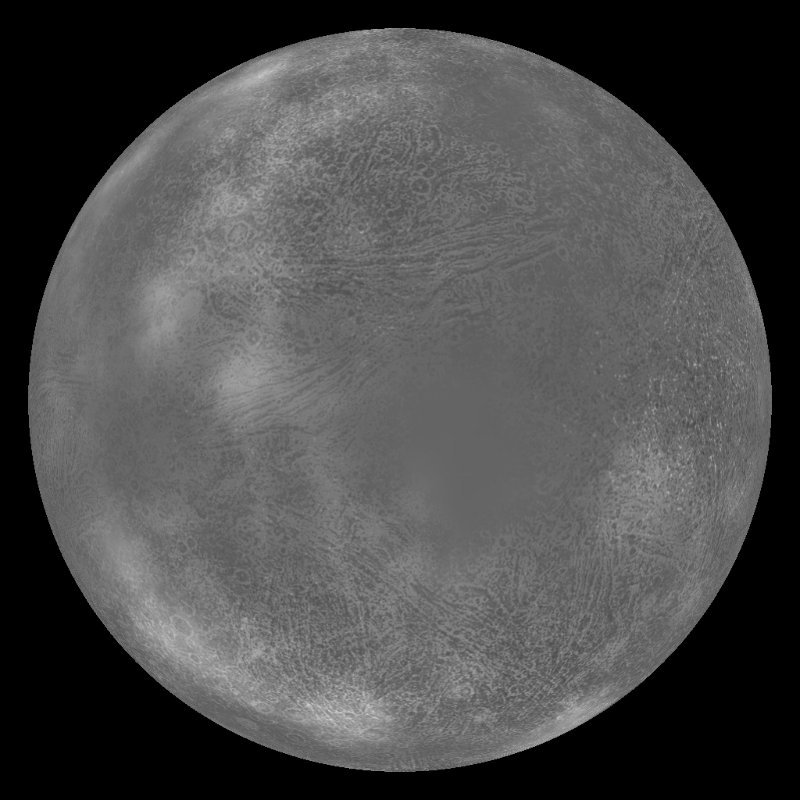

Space Can Be Both Amazing & Terrifying
Footer
"Modern science says: 'The sun is the past, the earth is the present, the moon is the future.' From an incandescent mass we have originated, and into a frozen mass we shall turn. Merciless is the law of nature, and rapidly and irresistibly we are drawn to our doom."
-Nikola Tesla
Crazy facts about space
For the most part space is amazing and always has us thinking about what else is out there, but, there are other parts of space that are down right terrifying and has us being thankfull about our very own shield that is our earth's atmosphere. From planets with extreme conditions to big astronomical events these are just some of the things to remind us to keep our guard up.
Extreme Planets In The Galaxy

- Mercury
- Mercury is the smallest plannet in our solar system.
- Mercury has a crazy fast orbit of 180,000 km/h (112,000 mph).
- Also a heavy belief that there's ice on Mercury.

- Kepler-37b
- Kepler-37b is thought to have a rocky and airless world mimilar to Mercury.
- Kepler is so close to its star it's definitely scorched and is the reason it's thought to be airless.
- was once known as the smallest exoplanet in 2013.

- Saturn
- Saturn's rings are made up of ice and rocks of all sizes, from dust particles to the size of mountains.
- Saturn has 7 groups of rings categorized from A to G.
- Saturn's atmosphere is composed primarily of hydrogen (96%) and helium (3%) with traces of other substances.
Strangest Objects in the Universe
Hello world!
 More on Mysterious Radio signals here
More on Mysterious Radio signals here
 To find out more about Nuclear Pasta
To find out more about Nuclear Pasta